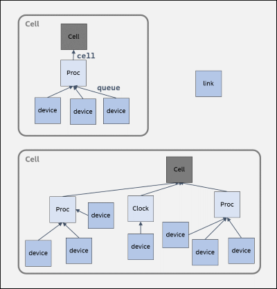
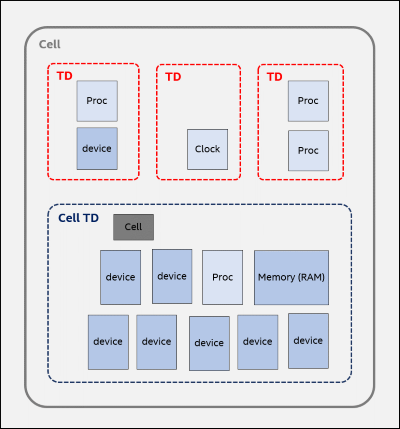

At the highest level, a Simics configuration is partitioned into one or multiple simulation cells. Each cell can be simulated in parallel with the other cells, with maintained determinism.

queue and cell attributes to an actual cell object.Distinct cells are loosely coupled. A typical example is a multi-machine configuration, where each machine consists of a single cell, and where the machines are connected with a simulated Ethernet network. Communication between cells occurs through special objects called links that forward messages between cells.
A device model should not access objects belonging to a different cell directly.
Each cell is partitioned into one or more thread domains. Models belonging to different thread domains can be simulated in parallel. However, objects within a single thread domain can only be accessed by a single thread at a time, namely by the thread currently holding the domain. A thread domain should be thought of as a high-level locking construct ensuring single-threaded access to the objects it contains.

Unlike the cell partitioning, which is static and given by the configuration, the partitioning of a cell into thread domains is performed by Simics as a function of the selected simulation mode, model capabilities, and any declared thread domain constraints.
The thread domains in a cell are not all equal. The thread domain which contains the cell object itself is special and is called the cell thread domain (cell TD). Objects residing in this domain use a very permissive device model, the Standard Device Model. Among other things, such models do not need to worry about thread domain boundary crossings or threading issues. Most models use this device model.
Models located in thread domains other than the cell TD are called thread-aware, and use the more restrictive Threaded Device Model.
The threads used to actually simulate the models are usually created by Simics, but models can also create their own threads. The Simics scheduler is briefly discussed in the Simics Scheduler section.